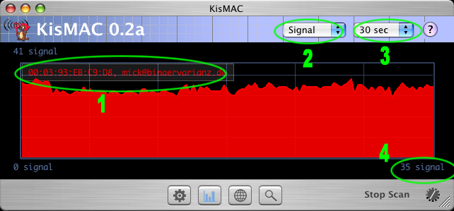

| KisMAC Manual - The Traffic View |
KisMAC's Traffic Grapher...

- This legend shows the current networks in their respective color. You may choose what to show in the preferences - BSSID and SSID.
- You may advice KisMAC to show either current "Signal" values or the "Packet" and "Byte" throughput. Please note that the last two are only available in passive mode, and will not work in active mode.
- Use this popup menu to change the current time scale.
- The most recent value is also expressed as a number.
| back | Tell me more |